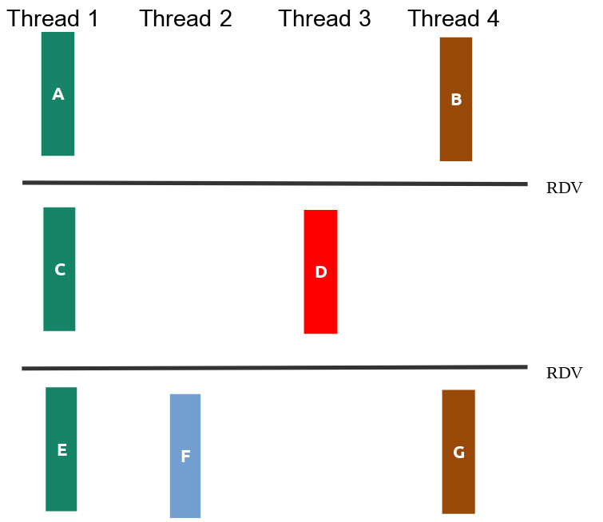

Neste prova iremos avaliar os objetivos de aprendizagem trabalhados na segunda metade do curso. Cada pasta contém os arquivos de uma questão da prova, incluindo arquivos .c para vocês colocarem suas soluções.
Cole os arquivos desta prova em seu repositório de entregas da disciplina, tendo estes caminhos a partir da raiz:
provas/af/q1provas/af/q2provas/af/q3provas/af/q4Vamos utilizar o servidor para receber a nota em cada questão. Será necessário soltar releases! A correção será sequencial, ao primeiro problema, irá parar (ou seja, precisa resolver os problemas anteriores para que os próximos critérios sejam considerados).
As issues já terão a sua nota no exercício. Como de costume, um pass significa que o servidor não encontrou problemas em sua solução (não que ela esteja correta!). Teremos uma fase de validação extra pelos professores, envolvendo, por exemplo:
A figura q1/sincronizacao.png ilustra as relações de dependência entre as partes das funções thread1, thread2, thread3 e thread4, mostrando que algumas delas poderiam ser feitas de maneira concorrente.

Seu trabalho nesta questão será:
OBS:
Você não deve introduzir novas dependências. Ou seja, se seu programa criar relações de dependência além das da figura seu trabalho valerá no máximo 50%.
Não altere os printf existentes, nem adicione novos.
Como descrubro minha nota?:
Será pelo corretor automático. Suba as alterações para o git e solte uma release:
git tag -a afq1.x.y -m "enviando a afq1.x.y"
git push origin afq1.x.yO executavel cURLInsper é uma ferramenta de linha de comando para transferir dados de um servidor, usando o protocolo http, a ferramenta funciona como interface para a biblioteca que faz o serviço pesado, o libcurl.
Para fazer o download de uma URL podemos executar no terminal, por exemplo, o comando:
./cURLInsper https://www.ufpe.br/index.html 0 No exemplo, estamos tentando fazer o download da página https://www.ufpe.br/index.html/ onde o valor 0 representa quantas vezes você já tentou fazer o download dessa URL. Assim caso falhe o download, então temos que chamar novamente o executável usando ./cURLInsper https://www.ufpe.br/index.html 1. Se falhar mais uma vez, o uso deve ser /cURLInsper https://www.ufpe.br/index.html 2 e assim sucessivamente até que ele obtenha sucesso no donwload.
Apesar de ter sido contrato um novo programador, o programa agora parece que tem falhado além do habitual, além disso as vezes as chamadas ao programa cURLInsper são interrompidas devido a sinais recebidos pelo sistema operacional.
Quando a URL é baixada com sucesso o programa retorna um valor maior que 0, que representa o custo de uso da API para realizar o download. Caso falhe o donwload o programa retorna -1 quando recebe uma chamada errada (quantidade incorreta de argumentos) e -2 quando na tentativa de fazer o download obteve uma falha de acesso a rede. Não se preocupe se cURLInsper está ou não fazendo o download de uma página (a URL nem precisa exitir, é tudo simulado). De preocupe somente com os seus retornos do cURLInsper.
Assim, o seu trabalho nesta questão é desenvolver um programa q2.c que recebe uma URL como parâmetro na linha de comando:
./q2 <URL>cURLInsper, passando para o cURLInsper o primeiro argumento recebido pelo executável q2 (que é a URL) e um inteiro com a quantidade de vezes que você já tentou fazer o download dessa URL (na primeira vez, passe 0, se tiver falha, passe 1, e assim sucessivamente).CURLINSPER TERMINOU NORMALMENTE!\n. (10% da nota)CURLINSPER TERMINOU COM SINAL %s\n, substituindo %s pelo texto que descreve o sinal. (20% da nota)FALHA NO DOWNLOAD DA URL\n. (20% da nota)CURLINSPER (primeiro passo) até que ele finalize normalmente. Lembre de atualizar em mais um a quantidade de vezes que você já tentou fazer o download da URL. No final, imprima o custo total no padrão DOWNLOAD COM SUCESSO, CUSTO TOTAL DE %d\n. (50% da nota)Atenção:
Imprima EXATAMENTE conforme solicitado, sem deixar espaços antes ou depois das frases. Dê apenas um \n ao final. Por via das dúvidas, utilize fflush(stdout).
O custo total é calculado pela quantidade de vezes que é preciso chamar o cURLInsper multiplicada pelo custo de uso da API para fazer o download com sucesso.
Trabalhe no arquivo q2.c e complete as partes faltantes
Compile com gcc -g q2.c -o q2
Deixei um arquivo executável q2_ref que exemplifica o comportamento desejado do programa final (é um gabarito!). Teste, por exemplo, com ./q2_ref https://www.ufpe.br/index.html e utilize como referência!
O executável cURLInsper tem comportamento determinístico. Se você programar corretamente e passar os argumentos corretamente para o cURLInsper, deve obter as mesmas saídas que o q2_ref para as mesmas entradas.
Nesta questão você deverá usar as funções de gerenciamento de processos e chamada de executáveis vistas em aula. Você não pode, por exemplo, usar system.
Como descrubro minha nota?:
Será pelo corretor automático. Suba as alterações para o git e solte uma release:
git tag -a afq2.x.y -m "enviando a afq2.x.y"
git push origin afq2.x.yNessa questão temos algumas palavras armazenadas em um arquivo texto e queremos justificá-las à direita, ou seja, alinhar todas elas à direita pelo tamanho da maior palavra. As palavras estão uma por linha no arquivo texto e contém no mínimo uma letra e no máximo 50 letras maiúsculas (‘A’-‘Z’), note que antes das palavras podem aparecer espaços em branco. Por exemplo para o arquivo in04.txt:
LONGEST
A
LONGER
SHORTTemos como saída o arquivo q3_saida.txt com o arquivo de entrada justificado à direita.
LONGEST
A
LONGER
SHORTNo arquivo q3_saida.txt as palavras devem aparecer todas alinhadas à direita e na mesma ordem da entrada, considerando o tamanho da maior palavra lida no arquivo de entrada.
Abra o arquivo q3.c e veja que já tem uma parte do código desenvolvida, para compilar o programa use:
gcc q3.c -g -o q3Na execução do programa q4 deve ser informado o número de linhas do arquivo texto e o nome do arquivo texto conforme abaixo:
./q4 4 in01.txtSeu objetivo neste exercício é:
Programar a função char *le_palavra_arquivo(int fd) que retorna uma string contendo a próxima palavra do arquivo apontado por fd. Ao chegar no fim do arquivo a função passa a retornar NULL. Considere que o arquivo já está aberto e deve ser fechado apenas na main. Para ler, é obrigatório utilizar apenas a chamada read, ou seja, não permito usar a função getline por exemplo. (30% da nota)
O programa gera o arquivo q3_saida.txt com o arquivo de entrada justificado à direita. (50% da nota)
Programa passa no valgrind sem erros. Aqui, também será necessário liberar memórias alocadas na função main() no código que receberam pronto! (20% da nota, apenas se resolveu corretamente os itens anteriores)
Atenção:
Para manipular os arquivos, utilize APENAS as chamadas vistas em aula: open, close, read, write. Não pode utilizar fopen, fdopen,fgets, fscanf por exemplo. Se utilizar, a nota do ex será zero (mesmo que passe nos testes).
Faça seus próprios arquivos de teste personalizados!
Como descrubro minha nota?:
Será pelo corretor automático. Suba as alterações para o git e solte uma release:
git tag -a afq3.x.y -m "enviando a afq3.x.y"
git push origin afq3.x.yNeste exercício, vamos fazer a soma e média dos elementos de um vetor em paralelo, dividindo a carga de trabalho entre threads!
O programa q4 recebe como argumento da linha de comando uma quantidade total de threads a serem criadas e o nome de um arquivo que será redirecionado para entrada padrão.
Boa parte do código já está desenvolvido, a função principal main()já está pronta, e está compilada e armazenada no binário q4.o, abaixo segue um trecho do código da função main():
.......
// inicializa variaveis globais
var_soma_global=0;
conta_threads=0;
// paraemtros para as threads
pthread_mutex_t mutex = PTHREAD_MUTEX_INITIALIZER;
sem_t sem;
sem_init(&sem, 0, 0);
id_thread = malloc(sizeof(pthread_t)*n_threads);
parametros = malloc(sizeof(struct soma_parcial_args)*n_threads);
for (int i = 0; i < n_threads; i++) {
parametros[i].id_thread = i;
parametros[i].n_threads = n_threads;
parametros[i].qtd_numeros = qtd_numeros;
parametros[i].vetor = vetor;
parametros[i].mutex = &mutex;
parametros[i].sem = &sem;
pthread_create(&id_thread[i],NULL,soma_parcial,¶metros[i]);
}
for (int i = 0; i < n_threads; i++){
pthread_join(id_thread[i],NULL);
}
printf("SOMA TOTAL: %.3lf\n", var_soma_global);
......
Parte da soma dos elementos já está pronta na função void *soma_parcial(void *_arg) no arquivo solucao.c, mas infelizmente só funciona para um thread. Para gerar o executável do programa q4 compile os arquivos da seguinte forma
gcc -g -Og -Wall q4.o solucao.c -o q4 -pthreadE para executar use:
./q4 1 in01.txtOnde 1 é a quantidade de threads a serem criadas e in01.txt é o arquivo que contem na primeira linha a quantidade de números ponto flutuante no arquivo em seguida os numeros vem, um por linha.
O problema é que quando tentamos rodar para duas threads ou mais threads o cáculo não funcionando, veja o resultado da execução:
./q4 4 in01.txtNote que a média é impressa várias vezes e soma quando executado com um arquivo muito grande dá pau !!! Então, sua tarefa envolverá tratar corretamente as regiões críticas e sincronizar as threads de tal forma que somente a última thread imprima a média calculado, pois isso só pode ser feito depois que todas threads já calcularam sua soma parcial.
Suas tarefas:
Fazer alterações na função void *soma_parcial(void *_arg) para a função passe a calcular a soma corretamente com N threads, considere que o número de threads será sempre menor que a quantidade de números no arquivo de entrada, além disso é necessário implementar esquema de sincronização para tratar a região crítica. Para exemplificar essa necessidade execute o programa com com uma thread e depois com 4 threads para o arquivo in03.txt (30% da nota).
Fazer alterações void *soma_parcial(void *_arg) para que média só seja caclulada e impressa depois que todas as threads tenham finalizado as suas somas parciais, aqui é importante que somente uma thread calcule e imprima a média, para tanto um esquema de sincronização para atender essa necessidade deve ser implementada (70% da nota).
IMPORTANTE: para implementar os dois esquemas de sincronização utlilize o mutex e o semáforo declarados no arquivo q4.h conforme abaixo e inicializado na função main():
struct soma_parcial_args {
int id_thread; // indice da thread
int n_threads; // numero de threads
int qtd_numeros; // qtd numeros do arquivo de entrada
double *vetor; // vetor de numeros
// variaeis de sincronizacao das threads
pthread_mutex_t *mutex;
sem_t *sem;
};OBS:
Compile com gcc -g -Og -Wall q4.o solucao.c -o q4 -pthread
Não modifique os printf() e nem acrescente, deixe o prints exatamente como estão.
Os cálculos e a sincronização precisam funcionar para os testes, se tiver saída apenas para burlar os testes, a questão será zerada!
Como descrubro minha nota?:
Será pelo corretor automático. Suba as alterações para o git e solte uma release:
git tag -a afq4.x.y -m "enviando a afq4.x.y"
git push origin afq4.x.y